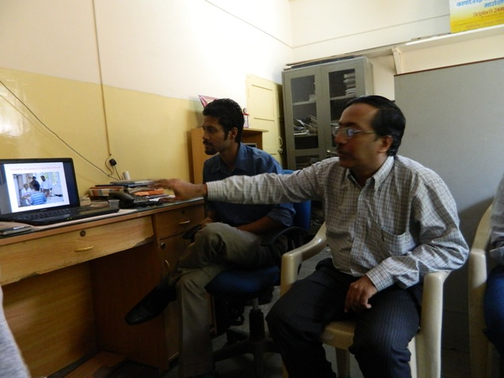

|
|

دو دهه تلاش مردان« ماوا» برای رفع خشونت علیه زنان در هند / محبوبه حسین زاده
شنبه18 آذر 1391
تغییر برای برابری : « به مردانی نیاز داریم که باور دارند زنان برای کتک زدن نیستند. اگر شما مردی هستید که شدیدا مخالف خشونت مردان علیه همسران هستید و دوست دارید این خشونت را متوقف کنید، اسامی و شماره تماس خود ( اگر تلفن دارید) را برایمان بفرستید». این آگهی کوتاه که به ابتکار یک مرد روزنامه نگار در سال 1991 در یکی از روزنامه های هند منتشر شد، در نهایت منجر به تشکیل ان جی اُ« مردان علیه خشونت و آزار» شد؛ این سازمان متشکل از مردانی است که با پذیرش نقش خود به عنوان مرتکبان اصلی خشونت علیه زنان، برای رفع خشونت علیه زنان تلاش می کنند. هریس سادانی که به مدت 19سال، مدیریت این ان جی اُ را برعهده دارد، در دفتر کوچک این سازمان که در یکی از مدارس دولتی شهر بمبئی واقع شده است، برایمان از دو دهه تلاش برای بازتفسیر مردانگی، کمک به مردان برای شکستن تصویر غالب از مردانگی و در نهایت رفع خشونت علیه زنان و تشکیل جامعه ای برابر می گوید.
دوران کودکی و محله زندگی هریش سادانی، نقش زیادی در شکل گیری شخصیت وی به عنوان یک مرد مدافع حقوق زنان داشته است:« خانه ما، در حقیقت فقط یک اتاق کوچک داشت و بقیه همسایه ها هم در چنین خانه هایی زندگی می کردند. من به راحتی می توانستم از درون خانه خودمان ببینم که در خانه کناری چه اتفاقی می افتد. همیشه می دیدم که مردهای همسایه، زنانشان را مورد آزار و اذیت قرار می دهند. در حالی که در خانه ما همه چیز برعکس بود و پدرم دوست داشت در کارهای خانه به مادرم کمک کند. من هم همین کارها را از پدرم یاد گرفتم ولی وقتی دوستانم مرا در حال انجام کارهای خانه و کمک به زنهای خانواده می دیدند، مسخره ام می کردند و مرا «سیسی» صدا می کردند».
زمانی که هریش سادانی، دانشجوی رشته مددکاری اجتماعی در یکی از معتبرترین دانشگاه های هند بود، به عنوان نیروی داوطلب مشغول فعالیت در یکی از پیشروترین سازمان های زنان هند شد. او احساس می کرد که عدم حضور مردان در جنبش هایی که با خشونت علیه زنان مبارزه می کنند، باعث ایجاد شکاف بزرگی بین آنان شده است و باید این فاصله رفع شود:« این که مردها را به عنوان مرتکبان خشونت معرفی کنیم، کافی نیست. باید اقدامات اساسی در راستای تغییر نگرش مردان انجام دهیم. همیشه گفته می شود که خشونت های مبتنی بر جنسیت، مساله و مشکل مربوط به زنان است. این رویکرد و دیدگاه باعث می شود که مردان از پروسه تغییر این روند کنار بمانند، کلیشه های جنسیتی تقویت شود و در نهایت فاصله و جدایی بین جنسیت ها بیشتر شود. مردها همواره به عنوان «بخشی از مشکل» خشونت علیه زنان در نظر گرفته می شوند اما آیا تا وقتی که آنان را به عنوان «بخشی از راه حل» رفع خشونت علیه زنان مورد خطاب قرار ندهیم، می توانیم با دلایل و عوامل ریشه ای مشکل« جنسیت» برخورد کنیم؟ مردها که خشن به دنیا نمی آیند، آنها هم خود را با تصاویر غالب جامعه مردسالار در مورد مردانگی تطبیق می دهند و اسیر این تصاویر می شوند. باید این تصویر را مورد سوال قرار داد. مردان هم باید آزاد و رها شوند».
این طرز نگرش باعث شد هریش سادانی هم یکی از مردانی باشد که به آگهی منتشرشده در روزنامه پاسخ دادند. 205 مرد از رده های سنی مختلف به این آگهی پاسخ داده بودند و نامه های خود را به دفتر روزنامه فرستاده بودند که از این میان، 90 نفر آنها در بمبئی زندگی می کردند، مسن ترین آنها یک مرد 66ساله و جوان ترین آنها یک پسر 14ساله بود. پسر 14ساله در نامه خود نوشته بود که همیشه در ایستگاه های اتوبوس می بیند که مردان، دستشان را روی زنها بلند می کنند اما هیچ کس، مانع این کار نمی شود و او همیشه ناراحت می شود که نمی تواند کاری برای این زنان انجام دهد. پس از جمع آوری کلیه نامه ها، مرد روزنامه نگار نشستی تشکیل داد و کلیه مردانی را که در شهر بمبئی زندگی می کردند به این نشست دعوت کرد. 30 نفر در این نشست شرکت کردند. جلسات این گروه به مدت یکسال ادامه یافت و بالاخره هفت نفر از مردان به رهبری هریش، هسته اصلی یک ان جی اُ با عنوان« مردان علیه خشونت و آزار» را تشکیل دادند و این سازمان را در ماه مارس سال 1993به ثبت رساندند تا مردانگی را باز تفسیر کنند و به مردان کمک کنند تا تصویر غالب از مردانگی را بشکنند و به تشکیل جامعه ای برابر کمک کنند.
هریش می گوید:« بعد از ثبت ان جی اُ، به مدت یکسال، جلساتمان را در همان دفتر روزنامه برگزار می کردیم و بعد از آن تصمیم گرفتیم که این کار را در خانه هایمان انجام دهیم و بالاخره هم توانستیم با هزینه خیلی کم(20دلار در ماه) یکی از اتاق های مدرسه را به عنوان دفتر کار اجاره کنیم. اینجا در بمبئی، هزینه اجاره بسیار بالاست و ان جی اُ های زیادی قادر به پرداخت این هزینه نیستند. اما مدارس دولتی که بیشتر، کودکان خانواده های فقیر در آن درس می خوانند، اجازه دارند که اتاق های خالی خود را به ان جی ا ها اجاره دهند تا از این طریق هم ان جی اُ ها بتوانند به فعالیت خود ادامه دهند و هم منبع درآمد اندکی برای مدرسه باشد. دفتر اصلی ما این اتاق است ولی در 6 ناحیه از ایالت ماهاراشترا هم فعالیت می کنیم».
«ماوا» که اولین سازمان داوطلبانه مردان برای رفع خشونت علیه زنان در کشور هند است، تلاش می کند تا از طریق درگیر کردن مردان، اقداماتی در راستای توقف و پیشگیری از خشونت مبتنی بر جنسیت انجام دهد. هریش سادانی توضیح می دهد:« گروه هدف ما شامل دو دوسته از مردها می شود؛ گروه اول شامل کلیه مردان می شود و مردان را به صورت کلی در نظر می گیریم ولی گروه دوم، شامل مردانی می شود که سابقه اعمال خشونت دارند. اقدامات ما در دو سطح انجام می شود؛ پیشگیری از خشونت و اقدامات درمانی برای مرتکبان خشونت. در مرحله پیشگیری از خشونت، ما یک خط مشی غیرتهاجمی برای مردان جوان داریم تا مردانگی را برایشان بازتفسیر کنیم و تعریف دوباره ای از مردانگی ارائه کنیم. اقدامات درمانی هم شامل مشاوره و راهنمایی می شود. پیش از این ما به مردها، به صورت حضوری مشاوره می دادیم ولی چندسالی است که یک خط تلفن امداد هم برای مردان جوان راه اندازی کرده ایم که می توانند برای خشونت، اعتیاد، مشکلات روانی و دیگر مسائل با ما تماس بگیرند. ما کلیه تماس ها را با ذکر جزئیات، ثبت می کنیم و در حقیقت برای هر فرد تماس گیرنده، پرونده ای تشکیل می دهیم که دفعات تماس و کلیه مراحل مشاوره در آن ثبت می شود و در صورت نیاز، مرتکبان خشونت را به مراکز تخصصی ارجاع می دهیم».

اعتقاد «ماوا» بر این است که مرتکبان خشونت باید گروه درمانی شوند و بتوانند در جمع های چندنفره از تجربیات خود صحبت کنند. البته این اقدام «ماوا» با واکنش های متفاوتی روبرو شده است. هریش سادانی برایمان تعریف می کرد که به محض راه اندازی برنامه گروه درمانی، یک زن روزنامه نگار در اولین گزارش در مورد این ان جی اُ نوشته بود که آنها، مکانی را فراهم کرده اند تا مردان دور هم جمع شوند و با صحبت از تجربه خشونت علیه زنان، احساس رضایت و لذت کنند.
یکی از برنامه های ابتکاری و جالب ماوا، برنامه «تغییر شخصیت» مردان است. در کارگاه های این دوره از پسران جوان خواسته می شود تا لیستی از امتیازات و محدودیت های مرد بودن را تهیه کنند. بعد از آنان خواسته می شود تا این لیست را در مورد محدودیت ها و مزیت های زن بودن هم تهیه کنند. در مرحله بعدی از آنان خواسته می شود تا تلاش کنند که در فرصتی چندهفته ای تا یکماهه، از لیست محدودیت های زنان خانواده خود کم کنند. به عنوان مثال، اگر این مرد جوان می تواند تا دیروقت از خانه بیرون بماند، باید تلاش کند تا در طول یک ماه، خواهر و مادرش هم از این حق برخوردار شود و محدودیت های مبتنی بر جنسیت کاهش یابد. هریش سادانی توضیح می دهد:« این برنامه، بخشی از یکی از پروژ¬های این انجمن بود که در سال 2006 شروع شده و به مدت دو سال ادامه داشته است. در این پروژه، 33 پسر 18 و 19ساله از شش کالج شهر پونا انتخاب شده و با برگزاری کارگاه های مختلف، به آنها آموزش های لازم را در خصوص مساله خشونت و چگونگی ایجاد حساسیت در دیگر مردان جوان نسبت به خشونت علیه زنان، آموزش دادیم.در حقیقت با انجام تمرین ذکر شده، مردان جوان این فرصت را خواهند داشت تا تغییر را از خودشان شروع کنند و در طول این پروسه، این توانایی و قابلیت را پیدا می کنند که تصویرهای کلیشه ای جنسیتی را به چالش بکشند و بتوانند در بحث و گفتگو با دیگر مردان جوان، ذهنیت های آنها را هم به چالش بکشند و حرکت به سمت برابری را از خودشان و زنان اطراف خود شروع کنند».
هریش سادانی از برخی اقدامات جریان ساز «ماوا» برایمان می گوید:« در سال 1995، دختر جوانی به نام دیپتی، به اشتباه مورد حمله اسیدپاشی قرار گرفت. ماجرا از این قرار بود که شوهر یک زن جوان به گروهی 5نفره از مردان شرور پول داده بود تا به صورت همسرش اسید بپاشند چون همسرش او را رها کرده بود. او مشخصات همسرش را در اختیار این گروه قرار داده بود و گفته بود که همسرش، هر روز در فلان ساعت در فلان ایستگاه، منتظر اتوبوس می ماند. بر حسب تصادف، در ساعت ذکرشده دختر جوان دیگری در آن ایستگاه منتظر اتوبوس مانده بود و مردان شرور، اسید را به صورت و بدن وی پاشیده بودند. نکته دردناک ماجرا اینجا بود که دیپتی، به جای اینکه شوهر زن جوان را مقصر بداند، خود زن جوان را مقصر می دانست که با بیوفایی به شوهرش و رهاکردن او، باعث شده بود که او به اشتباه هدف حمله اسیدپاشی قرار بگیرد. برغم کلیه بحث های غیرمنصفانه و بیرحمانه ای که در سطح عمومی در مورد بیوفایی همسر جوان این مرد مطرح می شد، «ماوا» از کلیه شهروندان خواست که به جای این بحث ها، برای جمع آوری هزینه جراحی پلاستیک این دختر جوان اقدام کنند. اما نکته جالب توجه اینجا بود که گروهی از زندانیان زندان «ناسیک»، مبلغ 11 هزار روپیه را که با سختی طاقت فرسا جمع کرده بودند، به همراه یک شعر برای این دختر جوان فرستادند».
یکی دیگر از این اقدامات، راه¬اندازی کمپین جمع¬آوری امضا برای اعتراض به تجاوز به یکی از مددکاران اجتماعی زن در یکی از روستاهای هند بود. این زن که در یکی از روستاهای هند در مورد مساله ازدواج زودهنگام دختران کار می کرد، مورد تجاوز قرار گرفته بود. «ماوا» کمپینی را راه اندازی کرد تا مردان با امضای این کمپین، به تجاوز و آزار جنسی زنان در محیط هار کاری اعتراض کنند. این کمپین توانست حمایت دیگر گروه ها را هم جذب کند و در نهایت قوانینی علیه آزار جنسی زنان در محیط های کاری به تصویب رسید.
یکی دیگر از اقدامات ابتکاری «ماوا» انتشار مجله ای سالانه با عنوان«اظهارات قلبی مردان»* است؛ هریش سادانی، شماره های مختلف مجله را نشانمان می دهد و سعی می کند طراحی های روی جلد هر مجله را که تلفیقی از اساطیر هندی و کلیشه های مرتبط با مردانگی و مردسالاری است، با دقت برایمان توضیح دهد. این مجله که تمام مطالب آن توسط مردان نوشته می شود، برای هر شماره سالانه خود، موضوعی مرتبط با جنسیت و مردانگی را انتخاب می کند و مردان را تشویق می کند تا تجربه های خود را در مورد کلیشه های مردانگی و پیشنهادهای خود برای تغییر و جایگزینی این کلیشه ها را در قالب مصاحبه، شعر، مقالات تحقیقی، دیدگاه و ....با دیگر مردان به اشتراک بگذارند. برخی از این نوشته ها در کتابی با عنوان« شکستن قالب ها» منتشر شده است. هریش می گوید:« جالب اینجاست که 35درصد خریداران این مجله، زنان هستند که مجله را با این امید خریداری می کنند که شاید شوهرانشان و دیگر مردهای خانواده هم مجله را بخوانند و از این طریق ذهنیت سنتی شان در مورد نقش های جنسیتی دچار چالش و تغییر شود».
هریش به عنوان یک مرد با بیشتر از دودهه سابقه فعالیت در حوزه زنان، حرفهای زیادی برای گفتن دارد و گفت و گو با او طولانی تر از چیزی می شود که انتظارش را داشتیم. بحث به اختلاف نظر بین برخی گروه های فمینیستی و «ماوا» بر سر مسائل مختلف مرتبط با خشونت و آزار جنسی زنان هم کشیده می شود. اما بالاخره «ماوا» با فعالیت مستمر و موثر توانسته است اعتماد گروه های پیشروی زنان را هم جلب کند تا آنجا که این گروه های فمینیستی برای برگزاری مراسم و برنامه های مختلف از «ماوا» دعوت به همکاری می کنند. هریش می گوید:« وقتی که مشکل، خشونت مردان علیه زنان است، پس راه حل این مشکل، تغییر هردوی اینهاست، نه فقط تغییر مردان و یا تغییر زنان. نتایج فعالیت های «ماوا» به ما این احساس مثبت را داده است که مردان هم می توانند عاملان تغییر و شریک و همراه جنبش ایجاد جامعه سالم و برابر جنسیتی باشند».
توضیح: نام این مجله به زبان مراتی یعنی زبان رسمی ایالت ماهاراشترا، تاحدودی متفاوت از ترجمه انگلیسی آن است. آنطور که از توضیحات آقای هریش سادانی متوجه شدم، معنای تحت لفظی این مجله به زبان مراتی « ضربان قلب مردان» است.